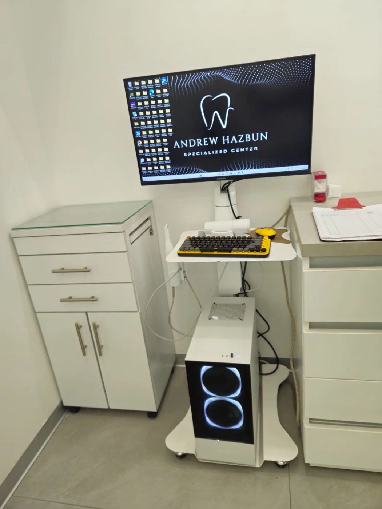

Reposición de las piezas ausentes, con evaluación clínica y tomografía 3D realizada dentro del centro.

Un implante dental es un poste de titanio que se coloca dentro del hueso del maxilar o de la mandíbula y cumple la función que tenía la raíz de la pieza perdida. Sobre él se ancla una corona, que devuelve la forma y la función del diente.
El conjunto tiene tres partes: el implante, dentro del hueso; el pilar, que atraviesa la encía; y la corona, que se fija sobre el pilar. El titanio se emplea porque el tejido óseo lo tolera bien. El implante no se apoya en las piezas vecinas.
Colocado el implante, el hueso que lo rodea forma tejido nuevo sobre la superficie del titanio, sin una capa fibrosa intermedia. Ese proceso se llama oseointegración y es lo que permite que el implante soporte las fuerzas de la masticación.
La integración necesita tiempo y estabilidad, así que por lo general se deja pasar un periodo antes de colocar la corona definitiva. Su duración varía según la calidad del hueso y la zona de la boca, y se establece en consulta.
Se revisan su historial médico, las encías y las piezas vecinas, y se realiza la tomografía 3D en el centro radiológico propio.
El poste se coloca en el hueso bajo anestesia local, con indicaciones para los días siguientes.
Se espera a que el hueso integre el implante. En esa etapa puede indicarse una restauración provisional.
Confirmada la integración, se registra la boca con el escáner intraoral y la corona se elabora en el laboratorio propio.

Una radiografía convencional entrega una imagen plana. La tomografía de haz cónico entrega un volumen, y eso cambia lo que puede verse antes de la cirugía.
Si el hueso no fuera suficiente, es aquí donde se valora si conviene preparar antes la zona con procedimientos como un injerto óseo o una elevación del seno maxilar. Lo que corresponda en su caso se le explica en consulta. El centro radiológico 3D y el escáner intraoral están dentro de la clínica.
Las tres reponen una pieza ausente, pero se apoyan en estructuras distintas. Cuál corresponde se define en consulta.
Se ancla en el hueso y funciona de forma independiente, sin desgastar las piezas vecinas. Transmite al hueso la carga de la masticación. Implica cirugía y un periodo de integración.
Se sostiene sobre los dientes contiguos, que deben tallarse para servir de pilares. Evita la cirugía, pero compromete piezas que podían estar sanas.
Se apoya sobre la encía y se retira para limpiarla. Es la opción menos invasiva y repone varias piezas a la vez, con menor estabilidad al masticar.
Los implantes también permiten reponer más de una pieza: varios implantes soportan un puente fijo, y existen prótesis completas ancladas sobre implantes, dentro de un plan de rehabilitación oral y otros tratamientos del centro. Cuando falta espacio para la pieza ausente, un tratamiento de ortodoncia puede prepararlo antes de la cirugía. Y si además se busca cambiar la forma o el color de las piezas visibles, la corona se define con los mismos criterios del diseño de sonrisa.

Colocar un implante es un procedimiento quirúrgico. El instrumental se procesa en el laboratorio de esterilización propio, con autoclave certificado y cabina UV, bajo protocolos de grado hospitalario.
Para quienes sienten ansiedad ante el tratamiento odontológico, el centro cuenta con sedación consciente con óxido nitroso, indicada caso por caso según el historial médico.
El implante no se caria, pero los tejidos que lo rodean sí pueden enfermarse. La inflamación de la encía, y la pérdida de hueso que puede seguirle, se conocen como mucositis periimplantaria y periimplantitis.
La candidatura se determina en consulta. Se valoran el volumen y la calidad del hueso, el estado de las encías, hábitos como el tabaquismo o el bruxismo, y las condiciones de salud o los medicamentos que influyan en la cicatrización. A veces hace falta preparar el sitio antes, y a veces conviene otra alternativa.
El Dr. John Andrew Hazbun Legrand es especialista en implantes dentales, rehabilitación y estética, con más de 24 años de experiencia. Conozca su formación y trayectoria. Si le falta una pieza o le han indicado una extracción, agende su cita.
Su permanencia depende de la salud del hueso y de la encía que lo rodean, de la higiene diaria, de los controles y de hábitos como el tabaquismo. No puede fijarse de antemano una duración exacta, y por eso se valora en cada revisión.
Depende del caso. El implante no involucra a las piezas vecinas y transmite la carga al hueso; el puente evita la cirugía, pero exige tallar los dientes contiguos. Se decide tras revisar esas piezas y el hueso disponible.
Entre la cirugía y la corona se deja un periodo para que el hueso integre el implante. Su duración varía según la calidad del hueso y la zona de la boca, así que no hay un plazo igual para todos.
El procedimiento se realiza bajo anestesia local. Después es habitual cierta molestia e inflamación, cuya intensidad y duración varían de un paciente a otro, y que se maneja con las indicaciones del especialista. También existe la sedación consciente con óxido nitroso, indicada caso por caso.
A veces el implante se coloca en el mismo acto de la extracción y otras conviene esperar a que el sitio cicatrice. Depende del motivo de la extracción, de si hay infección y del hueso que quede alrededor.
No existe un precio único. El costo depende de cuántas piezas se repongan, de si conviene preparar antes la zona y del tipo de corona que se indique. Lo que corresponde a su caso se le explica en la consulta de valoración, una vez hecho el estudio.
Escríbanos por WhatsApp y con gusto le orientamos sobre el tratamiento ideal para usted.
Lunes a viernes de 9:00 a.m. a 6:00 p.m. Sábados con cita previa. Design Center, Torre 1, Nivel 9, Oficina 909, Zona 10.